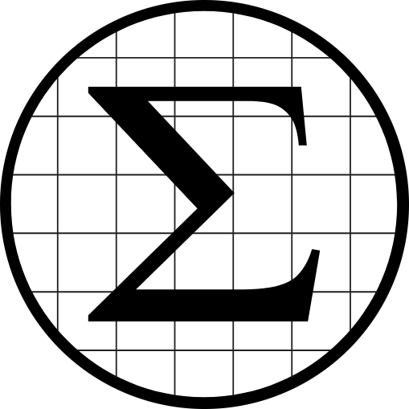

{% extends "base.html" %}
{% block title %}Home{% endblock %}
{% block content %}
Welcome To Sigmos.
"Ts is the tuffest graphing calculator."
What the phonk is ts?

Boiii, I guess you can't frickin' read or smtg, cuz ts is the mt (most tuffest) calculator in all of phonk history. Pretty much what ts thing WILL (it isn't even made yet twin) be able to do is very tuff math equations, like 6 + 7, (67) and other tuff ahh phonk stuff like floor((d/dx)(8/5x^42)) the graphing calculator is complete, but needs to be imported into HTML.
{% endblock %}